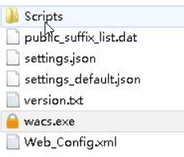
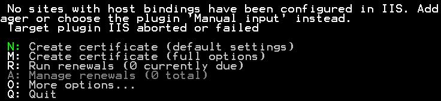
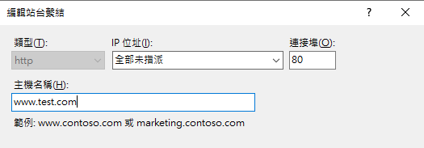
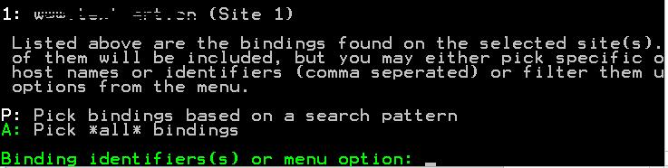
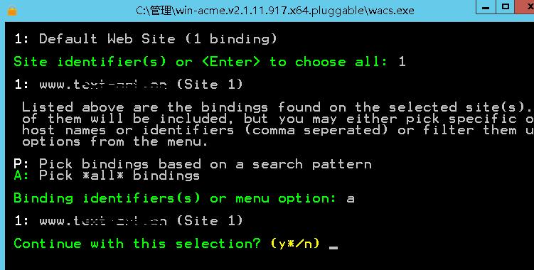
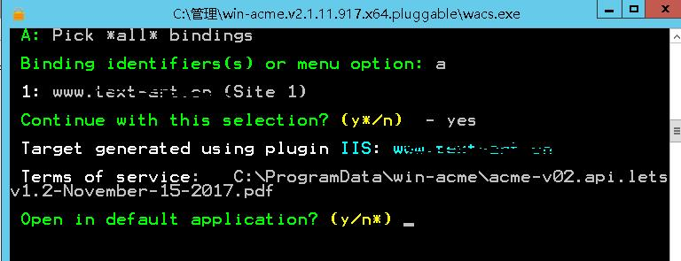
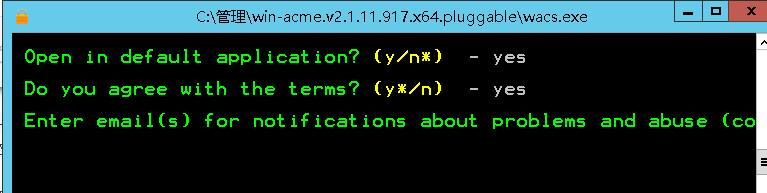
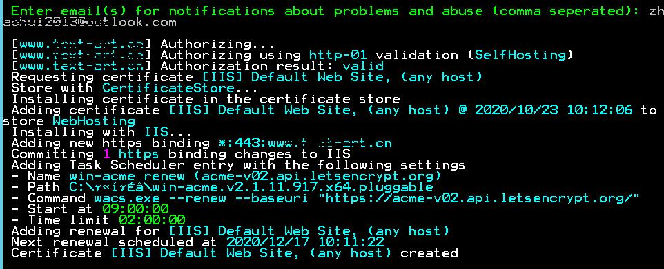

win-acme: Windows上的自動化SSL/TLS證書管理工具
在當今的網路世界中，HTTPS已經成為保護網站安全的標準。然而，對於Windows服務器管理員來說，管理SSL/TLS證書可能是一項繁瑣的任務。這就是win-acme發揮作用的地方 - 它為Windows用戶提供了一個簡單而強大的工具來自動化SSL/TLS證書的獲取和更新過程。
什麼是win-acme?
win-acme (Windows ACME Simple Client) 是一個開源的ACME客戶端，專為Windows環境設計。它允許用戶從Let's Encrypt等ACME兼容的證書頒發機構自動獲取、安裝和更新SSL/TLS證書。
專案網址: https://github.com/win-acme/win-acme/tree/v2.2.9.1701
win-acme的主要特點
自動化: 自動處理證書的獲取、安裝和更新過程。
Windows集成: 專為Windows環境設計，支持IIS、Exchange、RDP等多種Windows服務。
多種驗證方式: 支持HTTP驗證、DNS驗證等多種域名所有權驗證方式。
靈活配置: 提供命令行界面和圖形用戶界面，滿足不同用戶的需求。
插件系統: 支持自定義插件，可以擴展功能以滿足特定需求。
全面文檔: 提供詳細的文檔和示例，幫助用戶快速上手。
開源免費: 基於Apache License 2.0開源協議，完全免費使用。
如何使用win-acme
安裝
- 從GitHub releases頁面下載最新版本的win-acme。
- 解壓下載的ZIP文件到你選擇的目錄。
基本使用
- 以管理員身份運行
wacs.exe。
- 選擇 "N" 創建新證書。

- 運行wacs.exe之後可能出現：No sites with host binding have been configured in IIS

要先IIS進行繫結，之後再重跑一次應該就能找到默認網站。 - 再次運行Create Certificate，找到了默認網站的binding，選則1

- 列出默認網站

- 繼續介面選擇Y

- 證書PDF Y或N都行，Y會打開建立成功的證書PDF

- 選擇同意 Y，然後輸入信箱。

- 建立成功顯示證書資訊，過期時間和網站資訊。

- IIS會在443 PORT自動連接證書。
高級配置
win-acme支持通過命令行參數或配置文件進行高級配置。例如:
1 | wacs.exe --target manual --host example.com --installation iis --websiteroot C:\inetpub\wwwroot |
這條命令會為 example.com 獲取證書，並將其安裝到IIS中。
主要用例
IIS網站: 自動為IIS託管的網站安裝和更新SSL證書。
Exchange服務器: 為Exchange服務器配置SSL證書，提高郵件傳輸的安全性。
遠程桌面服務: 為RDP服務配置SSL證書，增強遠程連接的安全性。
其他Windows服務: 如FTP、SMTP等服務的SSL證書管理。
win-acme的優勢
簡化證書管理: 大大減少了手動管理SSL證書的工作量。
降低成本: 通過使用免費的Let's Encrypt證書，降低了SSL證書的成本。
提高安全性: 自動更新確保了證書始終是最新的，減少了過期風險。
靈活性: 適應各種Windows服務器環境和配置需求。
注意事項
定期檢查: 雖然過程是自動化的，但定期檢查證書狀態仍然是好習慣。
防火牆設置: 確保必要的端口(如80和443)是開放的，以便進行驗證。
備份: 在首次使用前，建議備份現有的SSL配置。
權限: 確保win-acme有足夠的權限來修改必要的系統設置。
結論
win-acme為Windows服務器管理員提供了一個強大而簡單的工具，以自動化SSL/TLS證書的管理過程。通過簡化證書獲取、安裝和更新的流程，它不僅節省了時間和資源，還提高了網站和服務的安全性。無論您是管理單個網站還是複雜的Windows服務器環境，win-acme都能夠滿足您的SSL證書管理需求。
如果您正在尋找一個可靠的方法來簡化Windows環境中的SSL證書管理，win-acme絕對值得一試。它不僅能夠節省您的時間和精力，還能確保您的網站和服務始終受到最新SSL/TLS證書的保護。